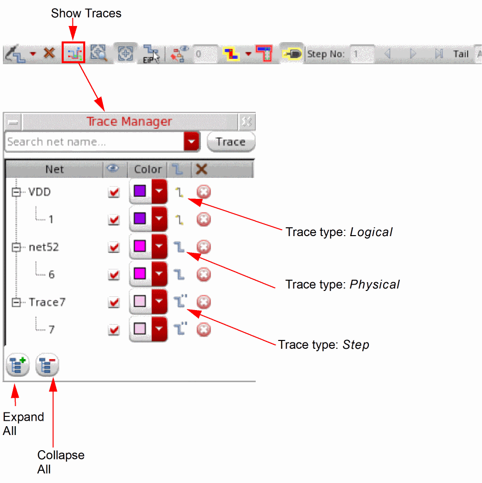

Adding a Trace Using the Trace Manager
The Net Tracer toolbar provides a Show Traces option that opens the Trace Manager form. Use the Trace Manager form to create new traces on specific nets and to control the display of the generated traces.

To add a new trace using the Trace Manager:
-
In the Search net name field, type the name of the net for which the trace needs to be created.
Alternatively, click the drop-down arrow associated with the field and select an available cellview net to which to add a trace. -
Click the Trace button.
The Net Tracer creates a trace for the specified net and displays the net name and the associated traced shapes in a tree structure in the Trace Manager window. The type of the trace generated—physical, logical, or step—is indicated by the icon displayed in the Type column. -
(Optional) Use the Visibility icon adjacent to the generated trace to control whether or not the trace is displayed in the canvas.
Click the column header to control the visibility of all the generated traces. - (Optional) Use the Remove all traces icon to remove a selected trace. To remove all the traces, click the column header.
Related Topics
Return to top